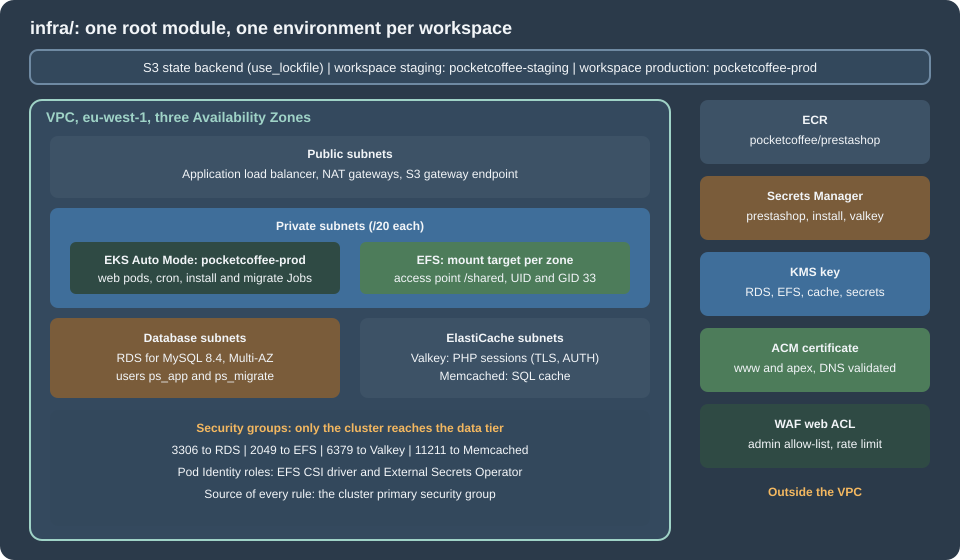
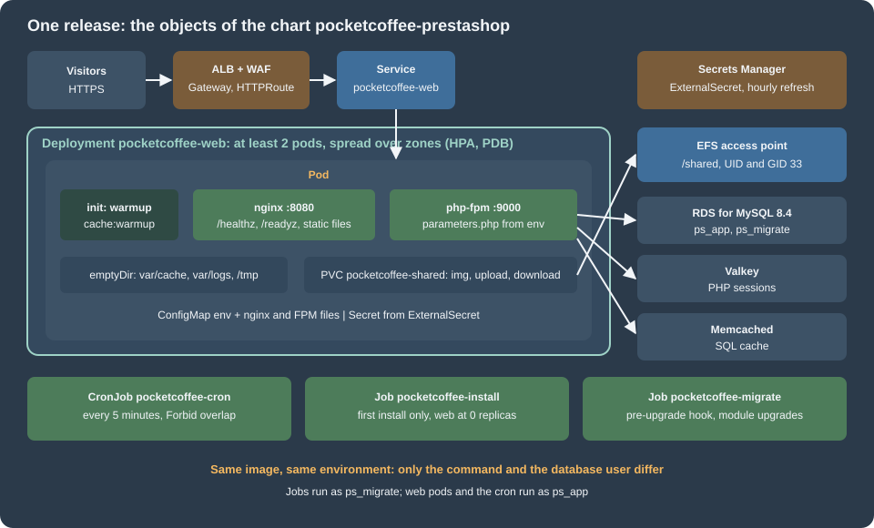

Cloud: EKS Infrastructure and Helm Deployment
|
This content was generated with the assistance of AI and should be verified against the official documentation before being relied on in production. |
This page was written against PrestaShop 9.2.0 (released 2026-09-30; its source was read at the tag 9.2.0), OpenTofu 1.12.6 with the AWS
provider 6.71 (constraint ~> 6.70) and the terraform-aws-modules registry modules at the versions pinned in the listings, Helm 4.3.1,
kubeconform 0.8.0, Kubernetes 1.36 on Amazon EKS (1.37 has been available on EKS since 2026-10-01) and nginx 1.29, and checked on
2026-10-29. The configuration and the chart were validated locally as described in each section and in
Version notes and what was not verified; nothing was planned, applied or deployed, and no cloud credentials were used.
The page builds what the rest of the section runs on. Pocket Coffee (a fictitious coffee shop, www.pocketcoffee.example) gets one root
module in infra/ that creates the cluster pocketcoffee-prod in eu-west-1 with its data tier, and one Helm chart,
pocketcoffee-prestashop, that deploys the release pocketcoffee into the namespace pocketcoffee. The architecture and the reasons for
it are on Cloud: Reference Architecture; the details this page only uses are
on Cloud: Managed Database (RDS and Aurora),
Cloud: Production Container Image,
Cloud: Shared Media and Writable Paths and
Cloud: Cache, Sessions and the Back Office in a Cluster.
Releases and rollbacks are on Cloud: Releases and Upgrades, scaling, logs and
backups on Cloud: Autoscaling, Observability, Backups and Security, and moving an existing
shop on Cloud: Migrating from a Single Server.
The WordPress section builds the same kind of platform, and its infrastructure page is the model for this one: same file layout, same modules, same workspaces, same state backend. This page does not repeat the explanation of those; it shows the PrestaShop version of each file and says what differs and why. Read EKS Infrastructure with OpenTofu for the state backend bootstrap, the workspace trade-offs and the secrets-and-state discussion, and Deploying on EKS with Helm for the general shape of a PHP chart. The fundamentals are on Infrastructure as Code on AWS, VPC Networking, EKS Clusters, RDS, Block and File Storage on AWS, Secrets Manager and KMS, Route 53 and Certificates, Container Registry, Load Balancers and Gateways and Deploying Microservices on EKS, and for Kubernetes on Helm, Jobs and CronJobs, Health Probes and Lifecycle, Scheduling and Disruptions and Gateway API.
What the configuration builds

One root module in infra/ creates one environment; the workspace (staging or production) chooses which. The files are split by service:
| File | Contents |
|---|---|
|
Constraints, the S3 backend, the provider, the inputs and the per-workspace settings (sizes, CIDR, host name) in one map |
|
VPC with public, private, database and ElastiCache subnets in three zones; one customer-managed key |
|
EKS Auto Mode cluster, the EFS add-on, Pod Identity roles for the EFS driver and External Secrets Operator |
|
RDS for MySQL 8.4, Multi-AZ in production, with a managed master password |
|
EFS with one mount target per zone and one access point, |
|
Valkey replication group for PHP sessions and a Memcached cluster for the SQL cache |
|
The image repository and the GitHub OIDC push role; the Secrets Manager containers |
|
The regional certificate with DNS validation; a web ACL that restricts the back office |
|
The values the chart needs |
Decisions that differ from the WordPress platform
-
MySQL 8.4, not MariaDB. RDS for MySQL 8.4 is the engine the PrestaShop pages of this section use (standard support until 2029-07-31; 8.0 left standard support on 2026-07-31). Aurora and MariaDB are alternatives on Cloud: Managed Database (RDS and Aurora).
-
Two cache services, because the shop has two cache needs. PHP sessions go to Valkey (a replicated, TLS-protected store). The shop’s SQL cache has no Valkey or Redis backend: the 9.2.0 source has
CacheApc,CacheMemcache,CacheMemcachedandCacheXcacheinclasses/cache/and nothing for Redis, so the shared option is ElastiCache for Memcached. The reasons and the settings are on Cloud: Cache, Sessions and the Back Office in a Cluster. -
No media bucket in this configuration. PrestaShop 9.2.0 has no S3 media option, so product images live on EFS and are served by nginx. A CloudFront distribution in front of the media host is optional and described on Cloud: Shared Media and Writable Paths; leaving it out also leaves out the
us-east-1provider alias that the WordPress module needs. -
One extra WAF rule. The back office lives in the renamed folder
admin-pocketcoffee; the web ACL blocks that path for every address outside an allow-list, which is cheaper than any in-application restriction and cannot be bypassed by a module. -
Secrets are containers. OpenTofu creates the Secrets Manager secrets; a script writes the values (below). The shop has more secret material than WordPress: the database credentials of two users,
secret,cookie_key,cookie_iv,new_cookie_keyand, since 9.0, the key pair of the Admin API.
State backend and workspaces
The backend is the S3 bucket and the use_lockfile locking of the WordPress page, with another key, so that both platforms can share one
bucket. Create the bucket as shown in
the state backend section (use your own bucket name), then pass it
with -backend-config. The workspace map in locals.tf refuses default, as there, so a plan in the wrong workspace fails instead of creating
a third environment. The honest limits of workspaces (one credential for both environments) are on the same page; separate AWS accounts with
the same code are the stricter choice.
The files
Providers, inputs and workspace settings
terraform {
required_version = ">= 1.11.0"
required_providers {
aws = {
source = "hashicorp/aws"
version = "~> 6.70"
}
random = {
source = "hashicorp/random"
version = "~> 3.7"
}
}
# Partial configuration: the bucket is passed with -backend-config.
backend "s3" {
key = "prestashop/pocketcoffee.tfstate"
workspace_key_prefix = "workspaces"
region = "eu-west-1"
encrypt = true
use_lockfile = true
}
}
provider "aws" {
region = var.region
default_tags {
tags = {
Project = "pocketcoffee-prestashop"
Environment = local.env
ManagedBy = "opentofu"
}
}
}variable "region" {
description = "Region of the cluster and of every regional resource."
type = string
default = "eu-west-1"
}
variable "root_domain" {
description = "Public Route 53 hosted zone that already exists."
type = string
default = "pocketcoffee.example"
}
variable "admin_cidrs" {
description = "CIDR blocks allowed to reach the public Kubernetes API endpoint and the back office."
type = list(string)
default = ["203.0.113.0/24"]
}
variable "github_repository" {
description = "Repository whose workflows may push images to ECR (OIDC subject)."
type = string
default = "pocketcoffee/prestashop-shop"
}
variable "admin_dir" {
description = "Renamed back-office folder, used by the WAF rule that restricts it."
type = string
default = "admin-pocketcoffee"
}data "aws_caller_identity" "current" {}
data "aws_availability_zones" "available" {
state = "available"
}
locals {
# One workspace per environment; "default" is deliberately not a key.
environments = {
staging = {
env = "staging"
site_host = "staging.pocketcoffee.example"
vpc_cidr = "10.30.0.0/16"
single_nat = true
kubernetes_version = "1.36"
db_instance_class = "db.t4g.medium"
db_multi_az = false
db_allocated_gb = 50
db_deletion_protect = false
valkey_node_type = "cache.t4g.small"
valkey_replicas = 1
memcached_node_type = "cache.t4g.small"
memcached_nodes = 1
}
production = {
env = "prod"
site_host = "www.pocketcoffee.example"
vpc_cidr = "10.10.0.0/16"
single_nat = false
kubernetes_version = "1.36"
db_instance_class = "db.r7g.large"
db_multi_az = true
db_allocated_gb = 200
db_deletion_protect = true
valkey_node_type = "cache.r7g.large"
valkey_replicas = 2
memcached_node_type = "cache.r7g.large"
memcached_nodes = 2
}
}
cfg = local.environments[terraform.workspace]
env = local.cfg.env
name = "pocketcoffee-${local.env}"
azs = slice(data.aws_availability_zones.available.names, 0, 3)
# Secrets Manager names follow pocketcoffee/<env>/<purpose>.
secret_prefix = "pocketcoffee/${local.env}"
}The providers are the AWS and random providers; there is no second AWS provider block because nothing in this configuration lives in
us-east-1. admin_cidrs is used twice, for the Kubernetes API endpoint and for the back-office allow-list, and holds a documentation address
range here; replace it with the office and VPN ranges. admin_dir repeats the folder name that the image builds (see
Cloud: Production Container Image) and must match it. The staging workspace is a smaller
independent copy: its own cluster, database and caches, one NAT gateway and no Multi-AZ.
Network and encryption key
module "vpc" {
source = "terraform-aws-modules/vpc/aws"
version = "6.7.3"
name = local.name
cidr = local.cfg.vpc_cidr
azs = local.azs
public_subnets = [for i in range(3) : cidrsubnet(local.cfg.vpc_cidr, 8, i)]
private_subnets = [for i in range(3) : cidrsubnet(local.cfg.vpc_cidr, 4, i + 1)]
database_subnets = [for i in range(3) : cidrsubnet(local.cfg.vpc_cidr, 8, i + 100)]
elasticache_subnets = [for i in range(3) : cidrsubnet(local.cfg.vpc_cidr, 8, i + 110)]
create_database_subnet_group = true
create_elasticache_subnet_group = true
enable_nat_gateway = true
single_nat_gateway = local.cfg.single_nat
one_nat_gateway_per_az = !local.cfg.single_nat
public_subnet_tags = { "kubernetes.io/role/elb" = 1 }
private_subnet_tags = { "kubernetes.io/role/internal-elb" = 1 }
}
resource "aws_vpc_endpoint" "s3" {
vpc_id = module.vpc.vpc_id
service_name = "com.amazonaws.${var.region}.s3"
vpc_endpoint_type = "Gateway"
route_table_ids = module.vpc.private_route_table_ids
}module "kms" {
source = "terraform-aws-modules/kms/aws"
version = "4.2.2"
description = "${local.name}: Secrets Manager, RDS, EFS and ElastiCache"
aliases = ["pocketcoffee/${local.env}"]
enable_key_rotation = true
}Identical in structure to the WordPress platform: three /20 private subnets (pods take their addresses from them), three public /24
subnets for the load balancer, small database and cache subnets with their subnet groups, an S3 gateway endpoint so that image layers skip
the NAT gateways, and one key with rotation for RDS, EFS, ElastiCache and Secrets Manager. The subnet tags are how the load balancer
controller finds where to place the load balancer.
The cluster and its identities
module "eks" {
source = "terraform-aws-modules/eks/aws"
version = "21.29.0"
name = local.name
kubernetes_version = local.cfg.kubernetes_version
vpc_id = module.vpc.vpc_id
subnet_ids = module.vpc.private_subnets
control_plane_subnet_ids = module.vpc.private_subnets
endpoint_public_access = true
endpoint_public_access_cidrs = var.admin_cidrs
endpoint_private_access = true
enable_cluster_creator_admin_permissions = true
compute_config = {
enabled = true
node_pools = ["general-purpose"]
}
addons = {
eks-pod-identity-agent = {
before_compute = true
}
aws-efs-csi-driver = {
pod_identity_association = [{
role_arn = aws_iam_role.efs_csi.arn
service_account = "efs-csi-controller-sa"
}]
}
}
}
data "aws_iam_policy_document" "pods_trust" {
statement {
actions = ["sts:AssumeRole", "sts:TagSession"]
principals {
type = "Service"
identifiers = ["pods.eks.amazonaws.com"]
}
}
}
resource "aws_iam_role" "efs_csi" {
name = "${local.name}-efs-csi"
assume_role_policy = data.aws_iam_policy_document.pods_trust.json
}
resource "aws_iam_role_policy_attachment" "efs_csi" {
role = aws_iam_role.efs_csi.name
policy_arn = "arn:aws:iam::aws:policy/service-role/AmazonEFSCSIDriverPolicy"
}
# External Secrets Operator: read only the secrets of this environment.
data "aws_iam_policy_document" "external_secrets" {
statement {
actions = ["secretsmanager:GetSecretValue", "secretsmanager:DescribeSecret"]
resources = ["arn:aws:secretsmanager:${var.region}:${data.aws_caller_identity.current.account_id}:secret:${local.secret_prefix}/*"]
}
statement {
actions = ["kms:Decrypt"]
resources = [module.kms.key_arn]
}
}
resource "aws_iam_role" "external_secrets" {
name = "${local.name}-external-secrets"
assume_role_policy = data.aws_iam_policy_document.pods_trust.json
}
resource "aws_iam_role_policy" "external_secrets" {
role = aws_iam_role.external_secrets.id
policy = data.aws_iam_policy_document.external_secrets.json
}
resource "aws_eks_pod_identity_association" "external_secrets" {
cluster_name = module.eks.cluster_name
namespace = "external-secrets"
service_account = "external-secrets"
role_arn = aws_iam_role.external_secrets.arn
}EKS Auto Mode runs node provisioning and patching, the block storage driver and the pod networking; the EFS CSI driver is an add-on with its own Pod
Identity role, and the External Secrets Operator reads only pocketcoffee/<env>/*. The WordPress page explains each of these points,
including why enable_cluster_creator_admin_permissions should be replaced by access entries for people and for the deployment role. Two
differences: there is no role for the shop pods, because without an S3 offload the pods call no AWS API, so a pod needs no cloud
identity at all and the chart’s service account has token mounting turned off; and Auto Mode does not include a Gateway API controller, so
the platform team installs the AWS Load Balancer Controller for the Gateway that the chart’s HTTPRoute attaches to (see
Deploying Microservices on EKS). Node replacement under Auto Mode happens at least every 21 days, so the
chart’s PodDisruptionBudget must allow a drain.
Database
resource "aws_security_group" "db" {
name_prefix = "${local.name}-db-"
description = "MySQL from the cluster nodes"
vpc_id = module.vpc.vpc_id
lifecycle {
create_before_destroy = true
}
}
resource "aws_vpc_security_group_ingress_rule" "db_from_cluster" {
security_group_id = aws_security_group.db.id
referenced_security_group_id = module.eks.cluster_primary_security_group_id
from_port = 3306
to_port = 3306
ip_protocol = "tcp"
description = "MySQL from pods on EKS nodes"
}
module "db" {
source = "terraform-aws-modules/rds/aws"
version = "7.2.2"
identifier = local.name
engine = "mysql"
engine_version = "8.4"
family = "mysql8.4"
major_engine_version = "8.4"
instance_class = local.cfg.db_instance_class
allocated_storage = local.cfg.db_allocated_gb
max_allocated_storage = local.cfg.db_allocated_gb * 4
storage_type = "gp3"
storage_encrypted = true
kms_key_id = module.kms.key_arn
db_name = "pocketcoffee"
username = "ps_admin"
port = 3306
# RDS creates and rotates the master password in Secrets Manager. The users
# ps_app and ps_migrate are created by the bootstrap script.
manage_master_user_password = true
master_user_secret_kms_key_id = module.kms.key_arn
multi_az = local.cfg.db_multi_az
db_subnet_group_name = module.vpc.database_subnet_group_name
vpc_security_group_ids = [aws_security_group.db.id]
publicly_accessible = false
backup_retention_period = 14
backup_window = "02:00-03:00"
maintenance_window = "Mon:03:30-Mon:04:30"
copy_tags_to_snapshot = true
deletion_protection = local.cfg.db_deletion_protect
skip_final_snapshot = !local.cfg.db_deletion_protect
auto_minor_version_upgrade = true
enabled_cloudwatch_logs_exports = ["error", "slowquery"]
parameters = [
{ name = "character_set_server", value = "utf8mb4" },
{ name = "collation_server", value = "utf8mb4_general_ci" },
{ name = "max_allowed_packet", value = "67108864" },
{ name = "slow_query_log", value = "1" },
{ name = "long_query_time", value = "1" },
{ name = "max_connections", value = "400", apply_method = "pending-reboot" },
]
}manage_master_user_password lets RDS create and rotate the master password in Secrets Manager, so it never passes through OpenTofu. The
application connects as ps_app and the Jobs as ps_migrate, two users created after the first apply with the grants described on
Cloud: Managed Database (RDS and Aurora) (without REQUIRE SSL while the image has no TLS support), which is also where the connection arithmetic
(pods x pm.max_children against max_connections) and RDS Proxy are covered. Parameter notes:
-
utf8mb4andutf8mb4_general_ciare the character set and one of the two collations that the 9.2.0 installer accepts (itsInstall.phpallowsutf8mb4_general_ciandutf8mb4_unicode_ci). -
There is no
sql_modeentry on purpose:DbPDOandDbMySQLiin 9.2.0 runSET SESSION sql_mode = ''on each connection, so the shop does not depend on the server default. -
max_allowed_packetis raised to 64 MiB for large imports and module upgrades. -
TLS is not enforced, and the PrestaShop core cannot ask for it. The 9.2.0
DbPDO::getPDO()passes no SSL attribute to PDO andparameters.phphas no key for one, so a server that requires TLS (require_secure_transport=ON) refuses the connection with error 3159 and the shop stops. The baseline of this page therefore leaves the parameter off and compensates with the private subnets and the security group. Encrypting the connection needs a class override and a patch of the Doctrine options baked into the image; they are on the database page, and the parameter is set only after the image carries them.
File storage
resource "aws_security_group" "efs" {
name_prefix = "${local.name}-efs-"
description = "NFS from the cluster nodes"
vpc_id = module.vpc.vpc_id
lifecycle {
create_before_destroy = true
}
}
resource "aws_vpc_security_group_ingress_rule" "efs_from_cluster" {
security_group_id = aws_security_group.efs.id
referenced_security_group_id = module.eks.cluster_primary_security_group_id
from_port = 2049
to_port = 2049
ip_protocol = "tcp"
description = "NFS from pods on EKS nodes"
}
module "efs" {
source = "terraform-aws-modules/efs/aws"
version = "2.2.1"
name = "${local.name}-shared"
encrypted = true
kms_key_arn = module.kms.key_arn
performance_mode = "generalPurpose"
throughput_mode = "elastic"
mount_targets = {
for i, subnet_id in module.vpc.private_subnets : "az${i}" => {
subnet_id = subnet_id
security_groups = [aws_security_group.efs.id]
}
}
# img/, upload/ and download/ live below /shared; every client is UID/GID 33 (www-data).
access_points = {
shared = {
name = "shared"
posix_user = {
uid = 33
gid = 33
}
root_directory = {
path = "/shared"
creation_info = {
owner_uid = 33
owner_gid = 33
permissions = "0755"
}
}
}
}
enable_backup_policy = true
}One file system, one access point. The access point makes every client UID and GID 33 (www-data) and creates /shared, so the pods need no
root and no ownership changes. The six folders that the shop writes (img, upload, download, the import folder, the combined theme assets
and the theme settings) are subPath directories of that one volume; which folders those are, and why code never goes on EFS, is the subject of
Cloud: Shared Media and Writable Paths.
Sessions and the SQL cache
resource "aws_security_group" "cache" {
name_prefix = "${local.name}-cache-"
description = "Valkey and Memcached from the cluster nodes"
vpc_id = module.vpc.vpc_id
lifecycle {
create_before_destroy = true
}
}
resource "aws_vpc_security_group_ingress_rule" "valkey_from_cluster" {
security_group_id = aws_security_group.cache.id
referenced_security_group_id = module.eks.cluster_primary_security_group_id
from_port = 6379
to_port = 6379
ip_protocol = "tcp"
description = "Valkey (TLS) from pods on EKS nodes"
}
resource "aws_vpc_security_group_ingress_rule" "memcached_from_cluster" {
security_group_id = aws_security_group.cache.id
referenced_security_group_id = module.eks.cluster_primary_security_group_id
from_port = 11211
to_port = 11211
ip_protocol = "tcp"
description = "Memcached from pods on EKS nodes"
}
# AUTH token. It lands in the (encrypted) state; see the WordPress infrastructure page.
resource "random_password" "valkey" {
length = 48
special = false
}
# Sessions: cluster mode disabled, one primary and replicas, TLS and AUTH.
resource "aws_elasticache_replication_group" "valkey" {
replication_group_id = "${local.name}-valkey"
description = "PHP sessions for ${local.name}"
engine = "valkey"
engine_version = "9.0"
node_type = local.cfg.valkey_node_type
port = 6379
num_cache_clusters = local.cfg.valkey_replicas + 1
automatic_failover_enabled = true
multi_az_enabled = true
subnet_group_name = module.vpc.elasticache_subnet_group_name
security_group_ids = [aws_security_group.cache.id]
at_rest_encryption_enabled = true
kms_key_id = module.kms.key_arn
transit_encryption_enabled = true
auth_token = random_password.valkey.result
# Sessions must not be evicted to make room: a full cache refuses writes instead.
parameter_group_name = aws_elasticache_parameter_group.valkey.name
snapshot_retention_limit = 0
}
resource "aws_elasticache_parameter_group" "valkey" {
name = "${local.name}-valkey9"
family = "valkey9"
description = "PrestaShop PHP sessions"
parameter {
name = "maxmemory-policy"
value = "noeviction"
}
}
# SQL cache of the shop (CacheMemcached). Memcached has no replication: a node
# loss empties its share of the cache, which PrestaShop rebuilds from the database.
resource "aws_elasticache_cluster" "memcached" {
cluster_id = "${local.name}-memcached"
engine = "memcached"
engine_version = "1.6.22"
node_type = local.cfg.memcached_node_type
num_cache_nodes = local.cfg.memcached_nodes
az_mode = local.cfg.memcached_nodes > 1 ? "cross-az" : "single-az"
port = 11211
parameter_group_name = "default.memcached1.6"
subnet_group_name = module.vpc.elasticache_subnet_group_name
security_group_ids = [aws_security_group.cache.id]
}Valkey is a replication group with cluster mode disabled, TLS, an AUTH token and Multi-AZ failover, as on the WordPress page, with one change:
the eviction policy is noeviction, because the content is PHP sessions (an evicted session logs a customer out and empties a cart in
progress), not a cache that can be rebuilt. Memcached is the opposite: no replication, no TLS in this configuration (the CacheMemcached class
of 9.2.0 calls addServer() with an address, a port and a weight and no TLS or authentication options, so the security group is the only
protection) and nothing that cannot be rebuilt from the database. The Memcached servers are not configured in parameters.php; they are rows of the table ps_memcached_servers
(ip, port, weight), which the back office writes on the performance page. A shop that is created by a Job has to insert that row itself;
see the cache page. The engine versions are strings, 9.0 for Valkey and 1.6.22 for Memcached here: check the ElastiCache user guide for
the versions offered when you apply.
Registry, secrets, certificate and web ACL
module "ecr" {
source = "terraform-aws-modules/ecr/aws"
version = "3.2.1"
# Created in the production workspace only; staging pulls from the same repository.
create = terraform.workspace == "production"
repository_name = "pocketcoffee/prestashop"
repository_image_tag_mutability = "IMMUTABLE"
repository_image_scan_on_push = true
repository_lifecycle_policy = jsonencode({
rules = [{
rulePriority = 1
description = "Keep the last 60 tags"
selection = {
tagStatus = "any"
countType = "imageCountMoreThan"
countNumber = 60
}
action = { type = "expire" }
}]
})
}
resource "aws_iam_openid_connect_provider" "github" {
count = terraform.workspace == "production" ? 1 : 0
url = "https://token.actions.githubusercontent.com"
client_id_list = ["sts.amazonaws.com"]
}
data "aws_iam_policy_document" "github_trust" {
count = terraform.workspace == "production" ? 1 : 0
statement {
actions = ["sts:AssumeRoleWithWebIdentity"]
principals {
type = "Federated"
identifiers = [aws_iam_openid_connect_provider.github[0].arn]
}
condition {
test = "StringEquals"
variable = "token.actions.githubusercontent.com:aud"
values = ["sts.amazonaws.com"]
}
condition {
test = "StringLike"
variable = "token.actions.githubusercontent.com:sub"
values = ["repo:${var.github_repository}:ref:refs/heads/main"]
}
}
}
resource "aws_iam_role" "github_ecr_push" {
count = terraform.workspace == "production" ? 1 : 0
name = "pocketcoffee-github-ecr-push"
assume_role_policy = data.aws_iam_policy_document.github_trust[0].json
}
data "aws_iam_policy_document" "ecr_push" {
count = terraform.workspace == "production" ? 1 : 0
statement {
actions = ["ecr:GetAuthorizationToken"]
resources = ["*"]
}
statement {
actions = [
"ecr:BatchCheckLayerAvailability", "ecr:InitiateLayerUpload", "ecr:UploadLayerPart",
"ecr:CompleteLayerUpload", "ecr:PutImage", "ecr:BatchGetImage", "ecr:GetDownloadUrlForLayer",
]
resources = [module.ecr.repository_arn]
}
}
resource "aws_iam_role_policy" "ecr_push" {
count = terraform.workspace == "production" ? 1 : 0
role = aws_iam_role.github_ecr_push[0].id
policy = data.aws_iam_policy_document.ecr_push[0].json
}# Containers only for the shop secrets: scripts/seed-secrets.sh writes the values, so
# cookie keys and passwords never appear in the configuration or in a plan.
resource "aws_secretsmanager_secret" "prestashop" {
name = "${local.secret_prefix}/prestashop"
description = "secret, cookie_key, cookie_iv, new_cookie_key, Admin API keys"
kms_key_id = module.kms.key_arn
recovery_window_in_days = local.env == "prod" ? 30 : 0
}
# One secret per database user, in the shape of a database credential (username, password,
# engine, host, port, dbname) that the rotation functions and RDS Proxy expect.
resource "aws_secretsmanager_secret" "db_app" {
name = "${local.secret_prefix}/prestashop-db-app"
description = "Database credential of ps_app: the web pods and the cron"
kms_key_id = module.kms.key_arn
recovery_window_in_days = local.env == "prod" ? 30 : 0
}
resource "aws_secretsmanager_secret" "db_migrate" {
name = "${local.secret_prefix}/prestashop-db-migrate"
description = "Database credential of ps_migrate: the install and migrate Jobs"
kms_key_id = module.kms.key_arn
recovery_window_in_days = local.env == "prod" ? 30 : 0
}
resource "aws_secretsmanager_secret" "valkey" {
name = "${local.secret_prefix}/valkey"
description = "Endpoint and AUTH token of the session store"
kms_key_id = module.kms.key_arn
recovery_window_in_days = local.env == "prod" ? 30 : 0
}
resource "aws_secretsmanager_secret_version" "valkey" {
secret_id = aws_secretsmanager_secret.valkey.id
secret_string = jsonencode({
VALKEY_HOST = aws_elasticache_replication_group.valkey.primary_endpoint_address
VALKEY_AUTH = random_password.valkey.result
VALKEY_PORT = "6379"
})
}
# The first administrator password, read once by the install Job; delete it afterwards.
resource "aws_secretsmanager_secret" "install" {
name = "${local.secret_prefix}/prestashop-install"
description = "ADMIN_PASSWORD for the first install"
kms_key_id = module.kms.key_arn
recovery_window_in_days = local.env == "prod" ? 30 : 0
}data "aws_route53_zone" "root" {
name = var.root_domain
private_zone = false
}
# Regional certificate for the load balancer. The apex redirects to www in production.
resource "aws_acm_certificate" "site" {
domain_name = local.cfg.site_host
validation_method = "DNS"
subject_alternative_names = local.env == "prod" ? [var.root_domain] : []
lifecycle {
create_before_destroy = true
}
}
resource "aws_route53_record" "site_validation" {
for_each = {
for o in aws_acm_certificate.site.domain_validation_options : o.domain_name => {
name = o.resource_record_name
type = o.resource_record_type
record = o.resource_record_value
}
}
zone_id = data.aws_route53_zone.root.zone_id
name = each.value.name
type = each.value.type
records = [each.value.record]
ttl = 60
allow_overwrite = true
}
resource "aws_acm_certificate_validation" "site" {
certificate_arn = aws_acm_certificate.site.arn
validation_record_fqdns = [for r in aws_route53_record.site_validation : r.fqdn]
}locals {
waf_rules = [
{ name = "AWSManagedRulesCommonRuleSet", priority = 10 },
{ name = "AWSManagedRulesKnownBadInputsRuleSet", priority = 20 },
{ name = "AWSManagedRulesSQLiRuleSet", priority = 30 },
{ name = "AWSManagedRulesPHPRuleSet", priority = 40 },
]
}
resource "aws_wafv2_ip_set" "admin" {
name = "${local.name}-admin"
scope = "REGIONAL"
ip_address_version = "IPV4"
addresses = var.admin_cidrs
}
# Regional web ACL, attached to the load balancer.
resource "aws_wafv2_web_acl" "alb" {
name = "${local.name}-alb"
scope = "REGIONAL"
default_action {
allow {}
}
# The renamed back office answers only to the office and VPN addresses.
rule {
name = "admin-allow-list"
priority = 1
action {
block {}
}
statement {
and_statement {
statement {
byte_match_statement {
search_string = "/${var.admin_dir}/"
positional_constraint = "STARTS_WITH"
field_to_match {
uri_path {}
}
text_transformation {
priority = 0
type = "LOWERCASE"
}
}
}
statement {
not_statement {
statement {
ip_set_reference_statement {
arn = aws_wafv2_ip_set.admin.arn
}
}
}
}
}
}
visibility_config {
cloudwatch_metrics_enabled = true
metric_name = "admin-allow-list"
sampled_requests_enabled = true
}
}
rule {
name = "login-rate-limit"
priority = 2
action {
block {}
}
statement {
rate_based_statement {
limit = 100
aggregate_key_type = "IP"
scope_down_statement {
byte_match_statement {
search_string = "/login"
positional_constraint = "STARTS_WITH"
field_to_match {
uri_path {}
}
text_transformation {
priority = 0
type = "NONE"
}
}
}
}
}
visibility_config {
cloudwatch_metrics_enabled = true
metric_name = "login-rate-limit"
sampled_requests_enabled = true
}
}
dynamic "rule" {
for_each = local.waf_rules
content {
name = rule.value.name
priority = rule.value.priority
override_action {
none {}
}
statement {
managed_rule_group_statement {
name = rule.value.name
vendor_name = "AWS"
}
}
visibility_config {
cloudwatch_metrics_enabled = true
metric_name = rule.value.name
sampled_requests_enabled = true
}
}
}
visibility_config {
cloudwatch_metrics_enabled = true
metric_name = "${local.name}-alb"
sampled_requests_enabled = true
}
}Source: AWS provider: aws_wafv2_web_acl
-
ECR. Tags are immutable and scan on push is on, so a
<git-sha>is never overwritten and "promote the image" means something; the repository exists only in the production workspace and staging pulls from it. The GitHub OIDC role pushes without long-lived keys and trusts only themainbranch of one repository; the workflow is on Cloud: Releases and Upgrades. -
Secrets. Five containers: the shop secret, the two database credentials (
prestashop-db-appandprestashop-db-migrate), the first administrator’s password (to delete after the install) and the Valkey secret, whose value OpenTofu writes because the AUTH token already exists in the state (the trade-off is in the WordPress page’s Secrets and the state file). -
Certificate. A regional certificate for the load balancer; in production the apex name is a second name on it, because the apex only redirects to
www. The hosted zone is a data source: the zone and its delegation are not part of this configuration. -
Web ACL. Rule 1 blocks
/admin-pocketcoffee/for addresses outside the IP set; rule 2 rate-limits/login, the customer login path; then four AWS managed rule groups. Managed groups produce false positives on a shop, for example on back-office forms and on module payloads: start them in count mode (override_action { count {} }), review the sampled requests and enforce afterwards. The web ACL is attached to the load balancer by the Gateway’s configuration, not by a Kubernetes annotation on the route.
Outputs
output "cluster_name" {
value = module.eks.cluster_name
}
output "db_endpoint" {
description = "Goes into the Helm value database.host."
value = module.db.db_instance_address
}
output "db_master_secret_arn" {
value = module.db.db_instance_master_user_secret_arn
}
output "efs_file_system_id" {
description = "Goes into the Helm value shared.efs.fileSystemId."
value = module.efs.id
}
output "efs_access_point_id" {
description = "Goes into the Helm value shared.efs.accessPointId."
value = module.efs.access_points["shared"].id
}
output "valkey_primary_endpoint" {
value = aws_elasticache_replication_group.valkey.primary_endpoint_address
}
output "memcached_endpoint" {
description = "Goes into ps_memcached_servers (see the cache page)."
value = aws_elasticache_cluster.memcached.cluster_address
}
output "site_certificate_arn" {
value = aws_acm_certificate_validation.site.certificate_arn
}
output "waf_acl_arn" {
value = aws_wafv2_web_acl.alb.arn
}
output "ecr_repository_url" {
value = module.ecr.repository_url
}These are the values the chart consumes: the database endpoint, the EFS file system and access point, the Memcached address, the certificate and web ACL ARNs and the repository URL. None of them is secret.
Validating and running it
cd infra
tofu init -backend-config="bucket=pocketcoffee-tfstate-123456789012"
tofu workspace select -or-create staging
tofu plan -out=staging.plan
tofu apply staging.plan
# Offline check, without credentials or a backend (one workspace at a time):
tofu init -backend=false
tofu fmt -check
TF_WORKSPACE=staging tofu validate
TF_WORKSPACE=production tofu validateThe complete configuration (all files above, in the order shown) passed tofu fmt -check and tofu validate in both workspaces with the
modules and providers pinned as shown, after tofu init -backend=false; in the default workspace validation fails with the intended
"does not identify an element" error. It was never planned or applied. The behaviours of a first apply (the control plane and a Multi-AZ
database take several minutes, certificate validation waits for DNS) are the ones described on the WordPress page.
Secrets for the shop
PrestaShop wants more secret material than WordPress, and every value has the same rule: identical on every pod, and never regenerated
by a pod. The shop has two database users, ps_app (web pods and cron) and ps_migrate (the install and migrate Jobs), and each has its own
secret in the shape of a database credential: pocketcoffee/prod/prestashop-db-app and pocketcoffee/prod/prestashop-db-migrate, each with the JSON
keys username, password, engine, host, port and dbname. That is the structure that the Secrets Manager rotation functions and RDS Proxy
expect, and a secret that also held cookie keys could not be handed to a rotation function. The ExternalSecret of the chart maps the password of each into
the Kubernetes Secret keys DB_PASSWORD_APP and DB_PASSWORD_MIGRATE, and the chart helper pc.dbEnv puts the right one into the container variable
DB_PASSWD (the name the official image and the installer use) next to DB_USER. All the other values live in pocketcoffee/prod/prestashop, and the
Valkey endpoint and AUTH token in pocketcoffee/prod/valkey. The keys of the shop secret become environment variables of the pods under their own names:
| Key | Used for |
|---|---|
|
The Symfony |
|
|
|
|
|
The OAuth2 key pair of the Admin API ( |
The new_cookie_key is not random text: it is a checksummed key in the format of the defuse/php-encryption library (the installer calls
PhpEncryption::createNewRandomKey()), so the seeding script asks the shop image to generate it. The script refuses to overwrite an existing
value, because new cookie keys log every customer and employee out and invalidate links in e-mails already sent. It was checked with
shellcheck and bash -n; it was not run, because that needs a shop image and an AWS account.
#!/usr/bin/env bash
# Writes the shop secrets into pocketcoffee/<env>/prestashop, the two database credentials
# into pocketcoffee/<env>/prestashop-db-app and -db-migrate, and the first administrator
# password into pocketcoffee/<env>/prestashop-install. Run once per environment by a
# person with secretsmanager:PutSecretValue; nothing is printed or stored in a file.
set -euo pipefail
env="${1:?usage: seed-secrets.sh <staging|prod> <image> <db-endpoint>}"
image="${2:?usage: seed-secrets.sh <staging|prod> <image> <db-endpoint>}"
db_host="${3:?usage: seed-secrets.sh <staging|prod> <image> <db-endpoint>}"
secret_id="pocketcoffee/${env}/prestashop"
db_app_id="pocketcoffee/${env}/prestashop-db-app"
db_migrate_id="pocketcoffee/${env}/prestashop-db-migrate"
install_id="pocketcoffee/${env}/prestashop-install"
gen() { openssl rand -base64 96 | tr -d '+/=\n' | cut -c1-"${1:-48}"; }
# Refuse to overwrite: new cookie keys log everyone out and break stored tokens.
if aws secretsmanager get-secret-value --secret-id "$secret_id" \
--query SecretString --output text >/dev/null 2>&1; then
echo "${secret_id} already has a value; rotate it deliberately." >&2
exit 1
fi
# new_cookie_key is a checksummed key in the format of defuse/php-encryption,
# so it is generated by the library that ships in the shop image.
new_cookie_key="$(docker run --rm --entrypoint php "$image" -r \
'require "/var/www/html/vendor/autoload.php"; echo Defuse\Crypto\Key::createNewRandomKey()->saveToAsciiSafeString();')"
# Key pair of the Admin API (OAuth2 signing keys), PEM text.
private_key="$(openssl genrsa 2048 2>/dev/null)"
public_key="$(printf '%s\n' "$private_key" | openssl rsa -pubout 2>/dev/null)"
payload="$(
jq -n \
--arg secret "$(gen 64)" --arg cookie_key "$(gen 64)" --arg cookie_iv "$(gen 32)" \
--arg new_cookie_key "$new_cookie_key" \
--arg api_private "$private_key" --arg api_public "$public_key" \
'{PS_SECRET: $secret, PS_COOKIE_KEY: $cookie_key, PS_COOKIE_IV: $cookie_iv,
PS_NEW_COOKIE_KEY: $new_cookie_key,
PS_API_PRIVATE_KEY: $api_private, PS_API_PUBLIC_KEY: $api_public}'
)"
# The shape of a database credential, as the rotation functions and RDS Proxy read it.
db_credential() {
jq -n --arg user "$1" --arg password "$(gen 40)" --arg host "$db_host" \
'{username: $user, password: $password, engine: "mysql", host: $host, port: 3306, dbname: "pocketcoffee"}'
}
aws secretsmanager put-secret-value --secret-id "$secret_id" --secret-string "$payload" >/dev/null
aws secretsmanager put-secret-value --secret-id "$db_app_id" --secret-string "$(db_credential ps_app)" >/dev/null
aws secretsmanager put-secret-value --secret-id "$db_migrate_id" --secret-string "$(db_credential ps_migrate)" >/dev/null
aws secretsmanager put-secret-value --secret-id "$install_id" \
--secret-string "$(jq -n --arg p "$(gen 24)" '{ADMIN_PASSWORD: $p}')" >/dev/null
echo "Seeded ${secret_id}, ${db_app_id}, ${db_migrate_id} and ${install_id}"Run it as ./scripts/seed-secrets.sh prod 123456789012.dkr.ecr.eu-west-1.amazonaws.com/pocketcoffee/prestashop:<git-sha> <db_endpoint> (the
image is the <git-sha> tag of the release, and db_endpoint is the output of the same name of the OpenTofu configuration), then create the two
database users with the passwords it generated (read them from the two database secrets in the console or with aws secretsmanager get-secret-value
inside a trusted shell; the SQL is on the database page). The passwords therefore exist in Secrets Manager and in the database, nowhere else.
Keep the characters of generated values to letters and digits: a % in a value is read by Symfony as the start of a parameter reference, which
is why parameters.php below escapes it.
parameters.php from the environment
The installer writes app/config/parameters.php once, for one server. In a cluster the file is part of the image and reads the
environment, so every pod builds the same configuration from the same sources, and no pod ever writes it. This is the one way the whole section
deploys the file: the image of Cloud: Production Container Image carries it, read-only, because a file that only calls getenv()
contains nothing secret, can be linted at build time and needs no rendering step. Mounting the file from a Kubernetes Secret would work too, but the
secrets would then be in a second place and the file would not be identical across images, so no page of the section does it.
<?php
/**
* app/config/parameters.php for Kubernetes: the installer's file, rebuilt from the
* environment. Plain settings come from a ConfigMap, secrets from a Secret that
* External Secrets Operator creates from Secrets Manager.
*/
/** Read a variable; without a default, a missing value stops the process. */
$pc_env = static function (string $name, ?string $default = null): string {
$value = getenv($name);
if (false !== $value && '' !== $value) {
return $value;
}
if (null !== $default) {
return $default;
}
error_log("parameters.php: missing environment variable $name");
throw new RuntimeException('Configuration error');
};
// Symfony reads % in a parameter as the start of a reference, so the installer writes
// every % as %%. config/bootstrap.php undoes it for the legacy constants.
$pc_escape = static fn (string $value): string => str_replace('%', '%%', $value);
return [
'parameters' => [
'database_host' => $pc_env('DB_SERVER'),
'database_port' => $pc_env('DB_PORT', '3306'),
'database_name' => $pc_env('DB_NAME'),
'database_user' => $pc_env('DB_USER'),
'database_password' => $pc_escape($pc_env('DB_PASSWD')),
'database_prefix' => $pc_env('DB_PREFIX', 'ps_'),
'database_engine' => 'InnoDB',
'mailer_transport' => 'smtp',
'mailer_host' => '127.0.0.1',
'mailer_user' => null,
'mailer_password' => null,
// The same values on every pod and on every release; never regenerated.
'secret' => $pc_escape($pc_env('PS_SECRET')),
'cookie_key' => $pc_escape($pc_env('PS_COOKIE_KEY')),
'cookie_iv' => $pc_escape($pc_env('PS_COOKIE_IV')),
'new_cookie_key' => $pc_escape($pc_env('PS_NEW_COOKIE_KEY')),
'api_public_key' => $pc_escape($pc_env('PS_API_PUBLIC_KEY')),
'api_private_key' => $pc_escape($pc_env('PS_API_PRIVATE_KEY')),
// Memcached for the SQL cache; the Symfony cache pool needs a real boolean.
'ps_caching' => 'CacheMemcached',
'ps_cache_enable' => filter_var($pc_env('PS_CACHE_ENABLE', '0'), FILTER_VALIDATE_BOOLEAN),
'ps_creation_date' => $pc_env('PS_CREATION_DATE'),
'locale' => $pc_env('PS_LOCALE', 'en-US'),
],
];The file was checked with php -l and executed with test values in a php:8.4-fpm container (it returned the expected array, escaped the
% of a test password as %%, and a missing variable stopped it with an error in the log). Points that matter:
-
The keys are those the installer writes.
Install.phpin 9.2.0 writesdatabase_host,database_port,database_user,database_password,database_name,database_prefix,database_engine,cookie_key,cookie_iv,new_cookie_key,api_public_key,api_private_key,ps_creation_date,secretandlocale, merged overparameters.yml.dist(which adds themailer_*keys andps_caching). Outbound mail is configured in the back office and stored in the database, so themailer_*entries stay at their defaults. -
ps_cache_enableis a real boolean.app/config/set_parameters.phpenables the Symfony cache pool backed by Memcached only when the value istrue(strict comparison), so an environment string such as"1"would silently do nothing.filter_varconverts it.ps_cachingnames the legacy class,CacheMemcached; the legacy constant_PS_CACHE_ENABLED_is defined from the same value byconfig/bootstrap.php. -
Percent signs. The installer writes
%as%%(the Symfony escape) andconfig/bootstrap.phpturns%%back into%for the legacy constants. The file does the same escape on every secret, so a password containing%works on both sides. -
ps_creation_dateis required.bootstrap.phpreads it unconditionally. For a new shop it is the day of the install, in the chart valueshop.creationDate; for an imported shop it is the value of the old file. -
A missing secret stops the process with a log line, so a pod without its secrets fails instead of serving a shop that cannot log anyone in.
-
The cache stores the result.
config/bootstrap.phpcopies the parameters intovar/cache/<env>/appParameters.phpand refreshes that copy only whenparameters.phpis newer. The Symfony container is compiled from the same values. A cache built while the image is built, without the real environment, would therefore carry empty values into every pod. This is why the chart builds the cache in an init container of each pod, with the real environment, into anemptyDir(see the Deployment below). The reference page speaks of a cache built at image build time; that works only if the build runs with the same parameters, which a cluster image cannot know.
Cluster prerequisites
Once per cluster, outside the chart: the namespace with the restricted Pod Security level (the pods below run as non-root with all
capabilities dropped, a read-only root file system and the default seccomp profile, which satisfies it), the External Secrets Operator
with its ClusterSecretStore named aws-secretsmanager, and the platform Gateway that routes attach to. The first two are the manifests of
the WordPress page (replace lumenpress by pocketcoffee); the Operator is installed with its Helm chart into the namespace
external-secrets, where the Pod Identity association of eks.tf already expects its service account. The Gateway with its
LoadBalancerConfiguration (the HTTPS listener with the ACM certificate from the output site_certificate_arn, and the web ACL from
waf_acl_arn) and the TargetGroupConfiguration are listed with their fields on
Deploying Microservices on EKS, because they belong to the platform, not to one application; this page
does not repeat them, since the field names of those controller resources change between controller versions. The chart’s route names the Gateway
by httpRoute.parentRef. A cluster that still uses an Ingress instead (ingress-nginx was retired in March 2026; the AWS controller’s
Ingress is the alternative) uses the Ingress shown on the WordPress page with the same Service.
The Helm chart

The chart lives in pocketcoffee-prestashop/, with the helper prefix pc. and one template file per object:
pocketcoffee-prestashop/
Chart.yaml values.yaml
files/default.conf files/php-fpm.conf
templates/_helpers.tpl serviceaccount.yaml configmap.yaml externalsecret.yaml shared-volume.yaml
deployment.yaml service.yaml httproute.yaml hpa.yaml cronjob.yaml job-migrate.yaml job-install.yaml
It was checked with helm lint (no failures) and with helm template | kubeconform -strict -ignore-missing-schemas -summary against the
Kubernetes 1.36 schemas: with the defaults, 14 objects render, 11 are valid and 3 are skipped (the ExternalSecret and the two HTTPRoutes are
custom resources); with install.enabled=true, 15 render, 11 valid, 4 skipped (the second ExternalSecret). A typo in a custom resource is
therefore caught only by the cluster.
apiVersion: v2
name: pocketcoffee-prestashop
description: PrestaShop on Kubernetes - nginx and PHP-FPM, cron, install and migrate Jobs
type: application
version: 0.1.0
appVersion: "9.2.0"
kubeVersion: ">=1.34.0-0"image:
repository: 123456789012.dkr.ecr.eu-west-1.amazonaws.com/pocketcoffee/prestashop
tag: "" # the git SHA, always passed with --set image.tag
nginxTagSuffix: "-nginx"
installTagSuffix: "-install" # installer image, used by the install Job only
pullPolicy: IfNotPresent
shop:
domain: www.pocketcoffee.example
adminDir: admin-pocketcoffee
name: Pocket Coffee
locale: en-US
creationDate: "2026-10-29" # ps_creation_date; copy the old value when migrating
trustedProxies: 10.10.0.0/16 # PS_TRUSTED_PROXIES and nginx real_ip: the VPC CIDR
# ps_cache_enable (Memcached SQL cache). Off until a measurement shows a gain: see the
# cache page before turning it on, and add the Memcached server row first.
cacheEnabled: false
# Per-pod scratch space (emptyDir), besides /tmp.
scratch:
- { name: cache, path: var/cache, size: 1Gi }
- { name: logs, path: var/logs, size: 512Mi }
- { name: export, path: admin-pocketcoffee/export, size: 512Mi }
web:
replicas: 2
terminationGracePeriodSeconds: 40
phpFpm:
resources:
requests: { cpu: 500m, memory: 768Mi }
limits: { memory: 1Gi }
nginx:
resources:
requests: { cpu: 100m, memory: 64Mi }
limits: { memory: 128Mi }
autoscaling:
enabled: true
minReplicas: 2
maxReplicas: 10
targetCPUUtilizationPercentage: 70
pdb:
maxUnavailable: 1
database:
host: "" # output db_endpoint
port: "3306"
name: pocketcoffee
prefix: ps_
appUser: ps_app
migrateUser: ps_migrate
shared:
claimName: pocketcoffee-shared
size: 100Gi # required by the API, not enforced by EFS
# One claim, one subPath per folder; nginx: true also mounts it, read-only, into nginx.
mounts:
- { subPath: img, path: img, nginx: true }
- { subPath: upload, path: upload }
- { subPath: download, path: download }
- { subPath: admin-import, path: admin-pocketcoffee/import }
- { subPath: theme-assets-cache, path: themes/pocketcoffee/assets/cache, nginx: true }
- { subPath: config-themes, path: config/themes }
efs:
fileSystemId: "" # output efs_file_system_id
accessPointId: "" # output efs_access_point_id
secrets:
enabled: true
storeName: aws-secretsmanager
name: pocketcoffee/prod/prestashop # cookie keys, secret, API keys
dbAppName: pocketcoffee/prod/prestashop-db-app # ps_app: username, password, ...
dbMigrateName: pocketcoffee/prod/prestashop-db-migrate # ps_migrate, read by the Jobs only
valkeyName: pocketcoffee/prod/valkey
installName: pocketcoffee/prod/prestashop-install
refreshInterval: 1h
httpRoute:
enabled: true
parentRef:
name: pocketcoffee
namespace: gateway
redirectApex: true
apexHost: pocketcoffee.example
cron:
enabled: true
schedule: "*/5 * * * *"
commands:
- php bin/console prestashop:search:index --env=prod
- php modules/pocketcoffee_lot/cron.php
migrate:
enabled: true
modules: [pocketcoffee_roast, pocketcoffee_pay, pocketcoffee_lot]
install:
enabled: false
language: en
country: es
timezone: Europe/Madrid
adminEmail: owner@pocketcoffee.example
fixtures: "0"Source: Helm Docs: Values files
The values are the contract with the rest of the section: image.repository and image.tag, shop.domain and shop.adminDir,
web.replicas, shared.claimName, database.host and the Secrets Manager names under secrets (secrets.name is the shop secret, secrets.dbAppName and secrets.dbMigrateName the two
database credentials). shop.cacheEnabled is false: the SQL cache is switched on only after the measurement that the cache page describes.
image.tag has no default and the chart refuses to render without it, so a deployment can never run "latest". The image repository holds
three tags per release: <git-sha> (PHP-FPM, the code, read-only), <git-sha>-nginx (nginx with the same files, so static assets can never
differ from the code PHP runs) and <git-sha>-install (the code with install/ and a writable tree, used only by the install Job); see the image
page. shop.trustedProxies is the VPC CIDR; the scratch and shared lists follow the folder table of the shared-files page.
{{- define "pc.name" -}}pocketcoffee-prestashop{{- end -}}
{{- define "pc.labels" -}}
app.kubernetes.io/name: {{ include "pc.name" . }}
app.kubernetes.io/instance: {{ .Release.Name }}
app.kubernetes.io/version: {{ .Chart.AppVersion | quote }}
app.kubernetes.io/managed-by: {{ .Release.Service }}
helm.sh/chart: {{ .Chart.Name }}-{{ .Chart.Version }}
{{- end -}}
{{- define "pc.selector" -}}
app.kubernetes.io/name: {{ include "pc.name" . }}
app.kubernetes.io/instance: {{ .Release.Name }}
app.kubernetes.io/component: web
{{- end -}}
{{- define "pc.image" -}}
{{ .Values.image.repository }}:{{ required "set image.tag to the git SHA" .Values.image.tag }}
{{- end -}}
{{- define "pc.nginxImage" -}}
{{ include "pc.image" . }}{{ .Values.image.nginxTagSuffix }}
{{- end -}}
{{/* Plain settings and secrets shared by every workload. DB_USER and DB_PASSWD are per workload. */}}
{{- define "pc.envFrom" -}}
- configMapRef:
name: {{ .Release.Name }}-env
{{- if .Values.secrets.enabled }}
- secretRef:
name: {{ .Release.Name }}-secrets
{{- end }}
{{- end -}}
{{- define "pc.dbEnv" -}}
- name: DB_USER
value: {{ .user | quote }}
- name: DB_PASSWD
valueFrom:
secretKeyRef:
name: {{ .root.Release.Name }}-secrets
key: {{ .key }}
{{- end -}}
{{- define "pc.containerSecurity" -}}
allowPrivilegeEscalation: false
readOnlyRootFilesystem: true
runAsNonRoot: true
capabilities:
drop: [ALL]
{{- end -}}
{{/* The writable paths: /tmp and the scratch folders per pod, the shared folders on EFS. */}}
{{- define "pc.codeMounts" -}}
- { name: tmp, mountPath: /tmp }
{{- range .Values.scratch }}
- { name: {{ .name }}, mountPath: /var/www/html/{{ .path }} }
{{- end }}
{{- range .Values.shared.mounts }}
- { name: shared, mountPath: /var/www/html/{{ .path }}, subPath: {{ .subPath }} }
{{- end }}
{{- end -}}
{{- define "pc.volumes" -}}
- { name: tmp, emptyDir: { sizeLimit: 256Mi } }
{{- range .Values.scratch }}
- { name: {{ .name }}, emptyDir: { sizeLimit: {{ .size }} } }
{{- end }}
- name: shared
persistentVolumeClaim:
claimName: {{ .Values.shared.claimName }}
{{- end -}}Source: Helm Docs: Named templates
The helpers keep the three workloads that run the shop (web pods, cron, Jobs) identical where it matters: the same image, the same
environment and the same mounts. pc.dbEnv is the only difference: the web pods and the cron connect as ps_app; the install and migrate
Jobs as ps_migrate, the user that may change the schema.
Configuration, secrets and the shared volume
# nginx container of the pod; PHP-FPM listens on 127.0.0.1:9000 in the same pod.
set_real_ip_from {{ .Values.shop.trustedProxies }};
real_ip_header X-Forwarded-For;
real_ip_recursive on;
server {
listen 8080 default_server;
server_name _;
root /var/www/html;
index index.php;
client_max_body_size 16M;
server_tokens off;
error_page 404 /index.php?controller=404;
# Liveness: answered by nginx itself. Readiness: PHP-FPM's own ping; no PHP code, no database.
location = /healthz { access_log off; default_type text/plain; return 200 "ok\n"; }
location = /readyz {
access_log off;
fastcgi_param REQUEST_METHOD GET;
fastcgi_param SCRIPT_NAME /fpm-ping;
fastcgi_param SCRIPT_FILENAME /fpm-ping;
fastcgi_pass 127.0.0.1:9000;
}
rewrite ^/(\d)(-[\w-]+)?/.+\.(jpe?g|png|webp|avif)$ /img/p/$1/$1$2.$3 last;
rewrite ^/(\d)(\d)(-[\w-]+)?/.+\.(jpe?g|png|webp|avif)$ /img/p/$1/$2/$1$2$3.$4 last;
rewrite ^/c/([\w.-]+)/.+\.(jpe?g|png|webp|avif)$ /img/c/$1.$2 last;
rewrite ^/api/?(.*)$ /webservice/dispatcher.php?url=$1 last;
location / { try_files $uri $uri/ /index.php$is_args$args; }
location /{{ .Values.shop.adminDir }}/ {
try_files $uri $uri/ /{{ .Values.shop.adminDir }}/index.php$is_args$args;
}
location ~ /\.(?!well-known) { deny all; }
location ~ ^/(app|bin|cache|classes|config|controllers|docs|localization|override|src|tests|tools|translations|var|vendor)/ { deny all; }
location ~ ^/modules/.*/vendor/ { deny all; }
location ~ \.(log|tpl|twig|sass|yml)$ { deny all; }
location ~ ^/modules/.*(\.(php|log|txt|lock|json|yml|yaml|tpl|twig)|config\.xml|config_[a-z]+\.xml)$ { deny all; }
location ~ ^/(composer\.lock|\.git.*|\.env.*)$ { deny all; }
location /img { location ~ \.php$ { deny all; } }
location /upload { location ~ \.php$ { deny all; } }
location ~ [^/]\.php(/|$) {
fastcgi_split_path_info ^(.+?\.php)(/.*)$;
try_files $fastcgi_script_name =404;
include fastcgi_params;
fastcgi_param SCRIPT_FILENAME $request_filename;
fastcgi_index index.php;
fastcgi_read_timeout 60s;
fastcgi_pass 127.0.0.1:9000;
}
}The nginx configuration is the one tested on the
installation page with the changes of a pod: PHP-FPM is on
127.0.0.1:9000, the admin folder name and the trusted proxy range come from the values (the file is rendered with Helm’s tpl), and two
locations are new. /healthz is answered by nginx itself. /readyz sends a FastCGI request whose SCRIPT_NAME is /fpm-ping, which PHP-FPM
answers by itself (ping.path in the pool file) without starting PHP code; the location sets only three parameters, because fastcgi_params
would add a second SCRIPT_NAME. A raw FastCGI request with exactly these parameters, sent to a php:8.4-fpm container with the pool file’s
ping.path, returned pong, and one with another script name returned File not found. Neither location touches the database.
; Loaded after the image's own pool files, so these values win.
[global]
error_log = /proc/self/fd/2
[www]
listen = 127.0.0.1:9000
pm = dynamic
pm.max_children = 16
pm.start_servers = 4
pm.min_spare_servers = 2
pm.max_spare_servers = 6
pm.max_requests = 500
request_terminate_timeout = 60s
ping.path = /fpm-ping
ping.response = pong
catch_workers_output = yes
decorate_workers_output = no
clear_env = no
; PHP sessions in Valkey. FPM expands ${NAME} from the pod environment.
php_admin_value[session.save_handler] = redis
php_admin_value[session.save_path] = "tls://${VALKEY_HOST}:${VALKEY_PORT}?auth=${VALKEY_AUTH}&prefix=pocketcoffee:sess:&timeout=1.5&read_timeout=2.5&persistent=1"
php_admin_value[redis.session.locking_enabled] = 1
php_admin_value[redis.session.lock_expire] = 30
php_admin_value[redis.session.lock_wait_time] = 20000
php_admin_value[redis.session.lock_retries] = 500Source: PHP Manual: FPM configuration
The pool file loads after the image’s own and wins. pm.max_children is the number that bounds database connections per pod. The session.* and redis.session.*
lines send PHP sessions to Valkey with the settings that the cache page explains (the back office uses PHP’s native handler, because framework.session.handler_id is ~ in
app/config/config.yml); FPM expands ${NAME} from the pod environment, which was checked with php-fpm -tt in php:8.4-fpm. This needs the
redis extension in the image and means the AUTH token is visible in the FPM configuration dump and in phpinfo(); the cache page discusses both.
apiVersion: v1
kind: ConfigMap
metadata:
name: {{ .Release.Name }}-env
labels:
{{- include "pc.labels" . | nindent 4 }}
data:
DB_SERVER: {{ required "set database.host" .Values.database.host | quote }}
DB_PORT: {{ .Values.database.port | quote }}
DB_NAME: {{ .Values.database.name | quote }}
DB_PREFIX: {{ .Values.database.prefix | quote }}
PS_DOMAIN: {{ .Values.shop.domain | quote }}
PS_LOCALE: {{ .Values.shop.locale | quote }}
PS_CREATION_DATE: {{ .Values.shop.creationDate | quote }}
PS_CACHE_ENABLE: {{ ternary "1" "0" .Values.shop.cacheEnabled | quote }}
PS_TRUSTED_PROXIES: {{ .Values.shop.trustedProxies | quote }}
SYMFONY_ENV: prod
VALKEY_PORT: "6379"
---
apiVersion: v1
kind: ConfigMap
metadata:
name: {{ .Release.Name }}-config
labels:
{{- include "pc.labels" . | nindent 4 }}
data:
default.conf: |
{{- tpl (.Files.Get "files/default.conf") . | nindent 4 }}
php-fpm.conf: |
{{- .Files.Get "files/php-fpm.conf" | nindent 4 }}The first ConfigMap holds the plain settings that parameters.php reads, plus PS_TRUSTED_PROXIES and SYMFONY_ENV. PS_TRUSTED_PROXIES is
an environment variable that app/config/config.yml feeds to Symfony’s trusted_proxies (introduced with 9.0.0, see its changelog); without
it the back office does not believe the load balancer’s X-Forwarded-Proto and redirects in a loop. SYMFONY_ENV=prod matters for
bin/console: its default environment is dev when the variable and --env are missing.
{{- if .Values.secrets.enabled }}
apiVersion: external-secrets.io/v1
kind: ExternalSecret
metadata:
name: {{ .Release.Name }}-secrets
labels:
{{- include "pc.labels" . | nindent 4 }}
spec:
refreshInterval: {{ .Values.secrets.refreshInterval }}
secretStoreRef:
kind: ClusterSecretStore
name: {{ .Values.secrets.storeName }}
target:
name: {{ .Release.Name }}-secrets
creationPolicy: Owner
# One Kubernetes Secret. The password of each database credential gets its own key;
# every JSON key of the shop and Valkey secrets (PS_SECRET, PS_COOKIE_KEY, ...,
# VALKEY_HOST, VALKEY_AUTH, VALKEY_PORT) becomes a key under its own name.
data:
- secretKey: DB_PASSWORD_APP
remoteRef:
key: {{ .Values.secrets.dbAppName }}
property: password
- secretKey: DB_PASSWORD_MIGRATE
remoteRef:
key: {{ .Values.secrets.dbMigrateName }}
property: password
dataFrom:
- extract:
key: {{ .Values.secrets.name }}
- extract:
key: {{ .Values.secrets.valkeyName }}
{{- if .Values.install.enabled }}
---
apiVersion: external-secrets.io/v1
kind: ExternalSecret
metadata:
name: {{ .Release.Name }}-install
labels:
{{- include "pc.labels" . | nindent 4 }}
spec:
refreshInterval: {{ .Values.secrets.refreshInterval }}
secretStoreRef:
kind: ClusterSecretStore
name: {{ .Values.secrets.storeName }}
target:
name: {{ .Release.Name }}-install
creationPolicy: Owner
dataFrom:
- extract:
key: {{ .Values.secrets.installName }}
{{- end }}
{{- end }}data maps the password of each of the two database credentials to its own key, and dataFrom with extract copies every JSON key of the shop
and Valkey secrets into the same Kubernetes Secret, which envFrom exposes as environment variables. Pods do not see a changed value until they restart, so a secret change is a rollout. The install secret is created
only while install.enabled is set, so the administrator password is not left in the cluster.
# Static provisioning: the PV names the EFS access point from OpenTofu (UID/GID 33).
apiVersion: v1
kind: PersistentVolume
metadata:
name: {{ .Release.Namespace }}-{{ .Values.shared.claimName }}
labels:
{{- include "pc.labels" . | nindent 4 }}
spec:
capacity:
storage: {{ .Values.shared.size }}
accessModes: [ReadWriteMany]
persistentVolumeReclaimPolicy: Retain
storageClassName: ""
csi:
driver: efs.csi.aws.com
volumeHandle: {{ required "set shared.efs.fileSystemId" .Values.shared.efs.fileSystemId }}::{{ required "set shared.efs.accessPointId" .Values.shared.efs.accessPointId }}
---
apiVersion: v1
kind: PersistentVolumeClaim
metadata:
name: {{ .Values.shared.claimName }}
labels:
{{- include "pc.labels" . | nindent 4 }}
spec:
accessModes: [ReadWriteMany]
storageClassName: ""
volumeName: {{ .Release.Namespace }}-{{ .Values.shared.claimName }}
resources:
requests:
storage: {{ .Values.shared.size }}Static provisioning: the volume handle is <file-system-id>::<access-point-id>, so the CSI driver mounts the access point from OpenTofu.
Retain keeps the product images when the release is deleted. The shared-files page shows the dynamic-provisioning alternative; use one, with
the claim name from shared.claimName.
The web Deployment
apiVersion: apps/v1
kind: Deployment
metadata:
name: {{ .Release.Name }}-web
labels:
{{- include "pc.labels" . | nindent 4 }}
app.kubernetes.io/component: web
spec:
{{- if .Values.install.enabled }}
replicas: 0 # no web pod while the installer runs
{{- else if not .Values.autoscaling.enabled }}
replicas: {{ .Values.web.replicas }}
{{- end }}
revisionHistoryLimit: 5
strategy:
type: RollingUpdate
rollingUpdate:
maxSurge: 25%
maxUnavailable: 0
selector:
matchLabels:
{{- include "pc.selector" . | nindent 6 }}
template:
metadata:
labels:
{{- include "pc.selector" . | nindent 8 }}
annotations:
checksum/config: {{ include (print $.Template.BasePath "/configmap.yaml") . | sha256sum }}
spec:
serviceAccountName: {{ .Release.Name }}-prestashop
automountServiceAccountToken: false
terminationGracePeriodSeconds: {{ .Values.web.terminationGracePeriodSeconds }}
securityContext:
runAsNonRoot: true
fsGroup: 33
seccompProfile:
type: RuntimeDefault
topologySpreadConstraints:
- maxSkew: 1
topologyKey: topology.kubernetes.io/zone
whenUnsatisfiable: DoNotSchedule
labelSelector:
matchLabels:
{{- include "pc.selector" . | nindent 14 }}
- maxSkew: 1
topologyKey: kubernetes.io/hostname
whenUnsatisfiable: ScheduleAnyway
labelSelector:
matchLabels:
{{- include "pc.selector" . | nindent 14 }}
initContainers:
# The compiled Symfony container embeds the parameters it was built with, so the
# per-pod cache is built here, with this pod's real environment.
- name: warmup
image: {{ include "pc.image" . }}
imagePullPolicy: {{ .Values.image.pullPolicy }}
securityContext:
{{- include "pc.containerSecurity" . | nindent 12 }}
runAsUser: 33
runAsGroup: 33
command: ["sh", "-c"]
args:
- |
set -e
for app in admin front; do
php bin/console cache:warmup --env=prod --app-id="$app"
done
envFrom:
{{- include "pc.envFrom" . | nindent 12 }}
env:
{{- include "pc.dbEnv" (dict "root" . "user" .Values.database.appUser "key" "DB_PASSWORD_APP") | nindent 12 }}
resources:
requests: { cpu: 500m, memory: 768Mi }
limits: { memory: 1Gi }
volumeMounts:
{{- include "pc.codeMounts" . | nindent 12 }}
containers:
- name: php-fpm
image: {{ include "pc.image" . }}
imagePullPolicy: {{ .Values.image.pullPolicy }}
securityContext:
{{- include "pc.containerSecurity" . | nindent 12 }}
runAsUser: 33
runAsGroup: 33
ports:
- name: fastcgi
containerPort: 9000
envFrom:
{{- include "pc.envFrom" . | nindent 12 }}
env:
{{- include "pc.dbEnv" (dict "root" . "user" .Values.database.appUser "key" "DB_PASSWORD_APP") | nindent 12 }}
livenessProbe:
tcpSocket:
port: fastcgi
periodSeconds: 10
failureThreshold: 3
lifecycle:
preStop:
exec:
command: ["sleep", "10"]
resources:
{{- toYaml .Values.web.phpFpm.resources | nindent 12 }}
volumeMounts:
{{- include "pc.codeMounts" . | nindent 12 }}
- name: config
mountPath: /usr/local/etc/php-fpm.d/zz-pocketcoffee.conf
subPath: php-fpm.conf
- name: nginx
image: {{ include "pc.nginxImage" . }}
imagePullPolicy: {{ .Values.image.pullPolicy }}
securityContext:
{{- include "pc.containerSecurity" . | nindent 12 }}
runAsUser: 101
runAsGroup: 101
ports:
- name: http
containerPort: 8080
livenessProbe:
httpGet:
path: /healthz
port: http
periodSeconds: 10
readinessProbe:
httpGet:
path: /readyz
port: http
periodSeconds: 5
timeoutSeconds: 3
failureThreshold: 2
lifecycle:
preStop:
exec:
command: ["sleep", "10"]
resources:
{{- toYaml .Values.web.nginx.resources | nindent 12 }}
volumeMounts:
- { name: nginx-tmp, mountPath: /tmp }
- name: config
mountPath: /etc/nginx/conf.d/default.conf
subPath: default.conf
{{- range .Values.shared.mounts }}
{{- if .nginx }}
- { name: shared, mountPath: /var/www/html/{{ .path }}, subPath: {{ .subPath }}, readOnly: true }
{{- end }}
{{- end }}
volumes:
{{- include "pc.volumes" . | nindent 8 }}
- { name: nginx-tmp, emptyDir: { sizeLimit: 128Mi } }
- name: config
configMap:
name: {{ .Release.Name }}-configWhat the Deployment does and why:
-
Two containers, one pod. nginx serves static files and passes
.phpto PHP-FPM on127.0.0.1:9000. The pods are spread over zones with a hard constraint (DoNotSchedule) and over nodes with a soft one, so losing a zone loses at most half of the capacity.maxUnavailable: 0makes a rollout add a pod before it removes one. -
The
warmupinit container. It runsbin/console cache:warmup --env=prodonce for each application kernel,adminandfront: in 9.2.0 each kernel has its own cache directory,var/cache/<env>/<app-id>. It uses the pod’s real environment and writes into theemptyDirthat the two containers then mount, for the reason given in theparameters.phpsection. The first pod of a rollout starts in tens of seconds, not milliseconds;maxSurgehides that. Whethercache:warmupneeds the database to be reachable was not tested: if it does, a database outage also stops new pods from starting, which is the safer failure. -
Probes that do not use the database. The liveness probes are a TCP check of PHP-FPM and nginx’s own
/healthz; readiness is/readyz, which only asks PHP-FPM whether it can accept a connection. A PrestaShop page always queries the database, so a probe on a shop URL would turn a database failover into "all pods unready", which removes every pod from the load balancer at the moment a retry would have worked. Application errors are seen by the load balancer’s 5xx metric and by the alarms on the operations page, not by the kubelet. -
preStopsleep andterminationGracePeriodSeconds. Ten seconds of sleep let the load balancer deregister the pod before nginx stops, and the grace period covers it plus the longest request. -
Writable paths. The root file system is read-only.
/tmp,var/cache,var/logsand the back-office export folder are per-podemptyDirvolumes, and the six shared folders aresubPathmounts of the EFS claim. nginx mounts only the two it serves (imgand the combined theme assets), read-only.fsGroup: 33makes theemptyDirvolumes writable for the PHP user; EFS ownership comes from the access point. A module that writes elsewhere fails with "read-only file system" at the first write, which is how you find it before production does. -
Logs. PHP and nginx errors go to stderr. The production Monolog handler of the shop is a
rotating_filehandler (app/config/config_prod.yml) that takes its path fromPS_LOG_OUTPUT, and a rotating handler appends a date to the path, so pointing it at a stream does not work; this was not tested. The chart gives the shop’s own log anemptyDirand leaves shipping it to the operations page. -
The configuration checksum. A changed ConfigMap changes the pod template, so the pods roll.
Service, route, autoscaling and disruption budget
apiVersion: v1
kind: Service
metadata:
name: {{ .Release.Name }}-web
labels:
{{- include "pc.labels" . | nindent 4 }}
spec:
type: ClusterIP
selector:
{{- include "pc.selector" . | nindent 4 }}
ports:
- name: http
port: 80
targetPort: http{{- if .Values.httpRoute.enabled }}
apiVersion: gateway.networking.k8s.io/v1
kind: HTTPRoute
metadata:
name: {{ .Release.Name }}
labels:
{{- include "pc.labels" . | nindent 4 }}
spec:
parentRefs:
- name: {{ .Values.httpRoute.parentRef.name }}
namespace: {{ .Values.httpRoute.parentRef.namespace }}
hostnames:
- {{ .Values.shop.domain }}
rules:
- matches:
- path:
type: PathPrefix
value: /
backendRefs:
- name: {{ .Release.Name }}-web
port: 80
{{- if .Values.httpRoute.redirectApex }}
---
apiVersion: gateway.networking.k8s.io/v1
kind: HTTPRoute
metadata:
name: {{ .Release.Name }}-apex
labels:
{{- include "pc.labels" . | nindent 4 }}
spec:
parentRefs:
- name: {{ .Values.httpRoute.parentRef.name }}
namespace: {{ .Values.httpRoute.parentRef.namespace }}
hostnames:
- {{ .Values.httpRoute.apexHost }}
rules:
- filters:
- type: RequestRedirect
requestRedirect:
scheme: https
hostname: {{ .Values.shop.domain }}
statusCode: 301
{{- end }}
{{- end }}Source: Gateway API: HTTPRoute
The Service is a ClusterIP, so nothing but the load balancer (and other pods in the cluster) reaches the pods; that matters because the shop
trusts X-Forwarded-Proto and X-Forwarded-For from the range in PS_TRUSTED_PROXIES. The first route sends www.pocketcoffee.example to the
Service. The second redirects the apex name to www with a 301, so that the shop has one canonical host (PrestaShop’s canonical redirection works
from the host stored in ps_shop_url, below). Gateway API support on EKS needs the AWS Load Balancer Controller; see
Gateway API.
{{- if and .Values.autoscaling.enabled (not .Values.install.enabled) }}
apiVersion: autoscaling/v2
kind: HorizontalPodAutoscaler
metadata:
name: {{ .Release.Name }}-web
labels:
{{- include "pc.labels" . | nindent 4 }}
spec:
scaleTargetRef:
apiVersion: apps/v1
kind: Deployment
name: {{ .Release.Name }}-web
minReplicas: {{ .Values.autoscaling.minReplicas }}
maxReplicas: {{ .Values.autoscaling.maxReplicas }}
metrics:
- type: Resource
resource:
name: cpu
target:
type: Utilization
averageUtilization: {{ .Values.autoscaling.targetCPUUtilizationPercentage }}
behavior:
scaleDown:
stabilizationWindowSeconds: 300
---
{{- end }}
apiVersion: policy/v1
kind: PodDisruptionBudget
metadata:
name: {{ .Release.Name }}-web
labels:
{{- include "pc.labels" . | nindent 4 }}
spec:
maxUnavailable: {{ .Values.pdb.maxUnavailable }}
selector:
matchLabels:
{{- include "pc.selector" . | nindent 6 }}Source: Kubernetes Documentation: Horizontal Pod Autoscaling and Kubernetes Documentation: Specifying a Disruption Budget for your Application
The HorizontalPodAutoscaler scales on CPU utilisation against the requests, with a five-minute scale-down window; better signals (FPM
saturation, request rate) are on the operations page. The PodDisruptionBudget allows one pod at a time: Auto Mode replaces nodes at least every
21 days, and a budget that is too strict blocks those drains. While install.enabled is set the HPA is not rendered and the Deployment has no
replicas, which is the point of the next section.
Cron
{{- if .Values.cron.enabled }}
apiVersion: batch/v1
kind: CronJob
metadata:
name: {{ .Release.Name }}-cron
labels:
{{- include "pc.labels" . | nindent 4 }}
spec:
schedule: {{ .Values.cron.schedule | quote }}
concurrencyPolicy: Forbid
startingDeadlineSeconds: 120
successfulJobsHistoryLimit: 1
failedJobsHistoryLimit: 3
jobTemplate:
spec:
backoffLimit: 0
activeDeadlineSeconds: 290
ttlSecondsAfterFinished: 3600
template:
metadata:
labels:
app.kubernetes.io/name: {{ include "pc.name" . }}
app.kubernetes.io/instance: {{ .Release.Name }}
app.kubernetes.io/component: cron
spec:
restartPolicy: Never
serviceAccountName: {{ .Release.Name }}-prestashop
automountServiceAccountToken: false
securityContext:
runAsNonRoot: true
fsGroup: 33
seccompProfile:
type: RuntimeDefault
containers:
- name: cron
image: {{ include "pc.image" . }}
securityContext:
{{- include "pc.containerSecurity" . | nindent 16 }}
runAsUser: 33
runAsGroup: 33
command: ["sh", "-c"]
args:
- |
set -e
cd /var/www/html
{{- range .Values.cron.commands }}
{{ . }}
{{- end }}
envFrom:
{{- include "pc.envFrom" . | nindent 16 }}
env:
{{- include "pc.dbEnv" (dict "root" . "user" .Values.database.appUser "key" "DB_PASSWORD_APP") | nindent 16 }}
resources:
requests: { cpu: 200m, memory: 512Mi }
limits: { memory: 1Gi }
volumeMounts:
{{- include "pc.codeMounts" . | nindent 16 }}
volumes:
{{- include "pc.volumes" . | nindent 12 }}
{{- end }}PrestaShop 9.2.0 has no scheduler of its own: a search of src/, classes/ and controllers/ finds no cron mechanism, and the console has
commands to run but nothing to run them (prestashop:search:index indexes products that are missing from the search index; --full rebuilds it).
What exists is what modules bring: a console command, or a module front controller that refuses non-CLI calls and is started with
php modules/<module>/cron.php, the pattern of the developer documentation (the sample in
Front Controllers and Templates and the console commands in
CLI Commands). The CronJob therefore runs a list of commands in one pod, cron.commands, and Forbid
keeps two runs from overlapping. Pocket Coffee’s list is the search index and the roast-lot module’s script. A module whose scheduler is an HTTP
URL that an external service must call is a different case: call it from outside, through the load balancer, with the module’s token, or
replace it with a CLI script. The CronJob runs on one scheduler only; the web pods never run cron, so scaling the Deployment does not multiply
the jobs.
The migrate and install Jobs
{{- if .Values.migrate.enabled }}
apiVersion: batch/v1
kind: Job
metadata:
name: {{ .Release.Name }}-migrate
labels:
{{- include "pc.labels" . | nindent 4 }}
annotations:
"helm.sh/hook": pre-upgrade
"helm.sh/hook-weight": "0"
"helm.sh/hook-delete-policy": before-hook-creation,hook-succeeded
spec:
backoffLimit: 0
activeDeadlineSeconds: 900
ttlSecondsAfterFinished: 3600
template:
metadata:
labels:
app.kubernetes.io/name: {{ include "pc.name" . }}
app.kubernetes.io/instance: {{ .Release.Name }}
app.kubernetes.io/component: migrate
spec:
restartPolicy: Never
serviceAccountName: {{ .Release.Name }}-prestashop
automountServiceAccountToken: false
securityContext:
runAsNonRoot: true
fsGroup: 33
seccompProfile:
type: RuntimeDefault
containers:
- name: upgrade-modules
image: {{ include "pc.image" . }}
securityContext:
{{- include "pc.containerSecurity" . | nindent 12 }}
runAsUser: 33
runAsGroup: 33
command: ["sh", "-c"]
args:
- |
set -e
cd /var/www/html
{{- range .Values.migrate.modules }}
php bin/console prestashop:module upgrade {{ . }} --env=prod
{{- end }}
envFrom:
{{- include "pc.envFrom" . | nindent 12 }}
env:
{{- include "pc.dbEnv" (dict "root" . "user" .Values.database.migrateUser "key" "DB_PASSWORD_MIGRATE") | nindent 12 }}
resources:
requests: { cpu: 200m, memory: 512Mi }
limits: { memory: 1Gi }
volumeMounts:
{{- include "pc.codeMounts" . | nindent 12 }}
volumes:
{{- include "pc.volumes" . | nindent 8 }}
{{- end }}Source: Helm Docs: Chart hooks
The migrate Job is a pre-upgrade hook: it runs with the new image before the new pods roll out, as ps_migrate, and upgrades the modules
with prestashop:module upgrade (an action of the prestashop:module command, with install, uninstall, enable, disable, reset,
configure and delete). A failing Job fails the upgrade and leaves the old pods running. The sequence around it (core upgrades, maintenance
mode, rollback) is on Cloud: Releases and Upgrades.
{{- if .Values.install.enabled }}
apiVersion: batch/v1
kind: Job
metadata:
name: {{ .Release.Name }}-install
labels:
{{- include "pc.labels" . | nindent 4 }}
spec:
backoffLimit: 0
activeDeadlineSeconds: 1200
template:
metadata:
labels:
app.kubernetes.io/name: {{ include "pc.name" . }}
app.kubernetes.io/instance: {{ .Release.Name }}
app.kubernetes.io/component: install
spec:
restartPolicy: Never
serviceAccountName: {{ .Release.Name }}-prestashop
automountServiceAccountToken: false
securityContext:
runAsNonRoot: true
fsGroup: 33
seccompProfile:
type: RuntimeDefault
containers:
- name: install
# The installer image keeps install/ and a writable code tree (see the text).
image: {{ include "pc.image" . }}{{ .Values.image.installTagSuffix }}
securityContext:
allowPrivilegeEscalation: false
runAsNonRoot: true
runAsUser: 33
runAsGroup: 33
capabilities:
drop: [ALL]
command: ["sh", "-c"]
args:
- |
set -eu
cd /var/www/html/install
php index_cli.php \
--domain="$PS_DOMAIN" --ssl=1 \
--db_server="$DB_SERVER:$DB_PORT" --db_name="$DB_NAME" \
--db_user="$DB_USER" --db_password="$DB_PASSWD" --prefix="$DB_PREFIX" \
--name={{ .Values.shop.name | quote }} \
--language={{ .Values.install.language }} --country={{ .Values.install.country }} \
--timezone={{ .Values.install.timezone }} \
--email={{ .Values.install.adminEmail | quote }} --password="$ADMIN_PASSWORD" \
--fixtures={{ .Values.install.fixtures | quote }}
envFrom:
{{- include "pc.envFrom" . | nindent 12 }}
env:
{{- include "pc.dbEnv" (dict "root" . "user" .Values.database.migrateUser "key" "DB_PASSWORD_MIGRATE") | nindent 12 }}
- name: ADMIN_PASSWORD
valueFrom:
secretKeyRef:
name: {{ .Release.Name }}-install
key: ADMIN_PASSWORD
resources:
requests: { cpu: 500m, memory: 1Gi }
limits: { memory: 2Gi }
volumeMounts:
- { name: tmp, mountPath: /tmp }
{{- range .Values.shared.mounts }}
- { name: shared, mountPath: /var/www/html/{{ .path }}, subPath: {{ .subPath }} }
{{- end }}
volumes:
- { name: tmp, emptyDir: { sizeLimit: 256Mi } }
- name: shared
persistentVolumeClaim:
claimName: {{ .Values.shared.claimName }}
{{- end }}The install Job runs the command-line installer of the installation page once, in an empty database. It deliberately differs from the web pods:
-
It runs from a separate image tag. The runtime image has no
install/folder and a read-only tree; the installer needs the folder and a place to writeapp/config/parameters.php. The-installtag is the same code withinstall/kept and a tree owned by UID 33. What the installer writes to that tree (its ownparameters.php, with newly generated keys; the removal ofinstall/; the renaming of the admin folder) disappears with the Job’s container, and that is intended: the keys that count are the ones in Secrets Manager. A fresh install has nothing encrypted with the installer’s temporary keys: employee and customer passwords are hashed with bcrypt, which does not usecookie_key(Hashing::hashcallspassword_hash). -
It writes the database and the shared folders. The shop is created in the database with the installer’s arguments:
--domainand--ssl=1become the row ofps_shop_urland the configurationPS_SSL_ENABLED(next section), and the installer copies default images intoimg/(which is why the Job mounts the shared volume; run the seeding Job of the shared-files page first so that thesubPathdirectories exist with the right owner). -
It is not a hook. A
post-installhook would run after the web pods are ready, and the pods would serve a half-installed shop. So the chart deploys the Job as an ordinary object and, whileinstall.enabledis true, scales the web Deployment to zero. The deployment script runs the chart twice: the Job first, the pods second. -
The administrator password is a Secrets Manager value, passed in a variable and then on the command line, where it shows in the process list of the Job pod. Treat it as a first-login password: change it with
bin/console prestashop:employee:change-password(new in 9.2) and delete the secret. -
--db_clear=1is the installer’s default, so running it twice against the same database erases the shop. The Job hasbackoffLimit: 0and is only rendered by a deliberate flag, and the migration Job must never run in the same release.
Shop domain and SSL
PrestaShop does not keep its address in parameters.php. It is in the database, in three places, and the installer writes all of them
from --domain and --ssl:
-
the table
ps_shop_url:domain,domain_sslandphysical_uriof each shop (the 9.2.0 installer sets both domains to the host it was started with andmainandactiveto 1); -
the configuration keys
PS_SHOP_DOMAINandPS_SHOP_DOMAIN_SSL(the same host, no scheme); -
the configuration key
PS_SSL_ENABLED(1when the installer ran with--ssl=1).
Link and Tools build every URL from ps_shop_url and PS_SSL_ENABLED, so a shop installed under another host name produces links to that
host. Tools::usingSecureMode() honours X-Forwarded-Proto: https by itself (it is the last test of that method), so the legacy front office
recognises HTTPS behind the load balancer without configuration; the Symfony back office needs PS_TRUSTED_PROXIES. If PS_SSL_ENABLED is
on and the proxy range is missing, a back-office request arriving over plain HTTP with an HTTPS referer raises "Infinite redirection detected,
please fill in the 'PS_TRUSTED_PROXIES' environment variable" (SSLMiddlewareListener); the front office redirects to itself when the scheme
it detects does not match. The configuration key PS_SSL_ENABLED_EVERYWHERE of older versions is no longer read: a search of the 9.2.0 source
finds it only in the changelog, which lists its removal. Set it nowhere.
To change the stored domain of a running shop (a migrated shop that still has the old host, or a staging copy) use the statements of the installation page against RDS from a one-off pod with the migrate credentials, not from a web pod:
UPDATE ps_shop_url
SET domain = 'www.pocketcoffee.example', domain_ssl = 'www.pocketcoffee.example'
WHERE id_shop_url = 1;
UPDATE ps_configuration
SET value = 'www.pocketcoffee.example'
WHERE name IN ('PS_SHOP_DOMAIN', 'PS_SHOP_DOMAIN_SSL');and switch SSL on from the console, which sets the key through the configuration service of the shop:
kubectl -n pocketcoffee exec deploy/pocketcoffee-web -c php-fpm -- \
php bin/console prestashop:config set PS_SSL_ENABLED --value=1 --env=prodThe prestashop:config command exists in 9.2.0 (ConfigCommand with --value, --lang, --shopId and --shopGroupId); that its set
action takes the key and --value as shown was read from the source, not run against the cluster. One caution: the host in ps_shop_url
must equal the Host header that reaches the pod, which is why the route forwards www.pocketcoffee.example unchanged and nginx passes it on. A multistore has one ps_shop_url row per shop and domain, and each needs its own route and
certificate name.
First install, or an existing database
There are two ways to create the database content, and the chart supports both with the same values:
| First install with the Job | Import of an existing shop | |
|---|---|---|
When |
A new shop, or a staging environment created from scratch |
A shop that runs on a single server today |
Database |
Empty database |
A dump imported into RDS, the same users created |
Secrets |
Generated by the seeding script |
The old |
Files |
Written by the installer into the shared volume |
The old |
|
|
Never |
|
The day of the install |
The old |
Domain |
Set by |
Updated in |
An import is a different procedure with its own risks (the old cookie keys must be kept or every customer is logged out, and old
hashed passwords depend on cookie_key); it is on
Cloud: Migrating from a Single Server. The deployment script below is the
first install; for an import, skip the first helm upgrade and run the second.
#!/usr/bin/env bash
# First deployment of the chart to pocketcoffee-prod: install Job first, then the web pods.
set -euo pipefail
sha="${1:?usage: deploy.sh <git-sha>}"
region="eu-west-1"
db_host="$(tofu -chdir=infra output -raw db_endpoint)"
fs_id="$(tofu -chdir=infra output -raw efs_file_system_id)"
ap_id="$(tofu -chdir=infra output -raw efs_access_point_id)"
aws eks update-kubeconfig --name pocketcoffee-prod --region "$region"
common=(
--namespace pocketcoffee
--set image.tag="$sha"
--set database.host="$db_host"
--set shared.efs.fileSystemId="$fs_id"
--set shared.efs.accessPointId="$ap_id"
)
# 1. Install: web pods at zero replicas, the install Job creates the shop in the empty database.
helm upgrade --install pocketcoffee ./pocketcoffee-prestashop "${common[@]}" \
--set install.enabled=true --set migrate.enabled=false --wait --wait-for-jobs --timeout 25m
# 2. Serve: the Job is removed, the web pods start with the finished database.
helm upgrade pocketcoffee ./pocketcoffee-prestashop "${common[@]}" \
--set migrate.enabled=false --wait --timeout 10m
kubectl -n pocketcoffee get pods,hpa,pdb,cronjobSource: Helm Docs: helm upgrade
The script passed shellcheck and bash -n. --wait-for-jobs makes Helm wait until the install Job completes; the second command removes the
Job, creates the HPA and starts the pods. migrate.enabled=false is set on both runs because the installer already created the current
schema and modules; later releases run with the default (migrate on). Run tofu -chdir=infra output first, as the script does, so the chart receives the
endpoint and the EFS identifiers.
Verifying the deployment
kubectl -n pocketcoffee get pods -o wide
kubectl -n pocketcoffee get httproute
curl -fsS -o /dev/null -w '%{http_code}\n' https://www.pocketcoffee.example/
curl -fsSI https://www.pocketcoffee.example/admin-pocketcoffee/ | head -n 1 # 403 from outside the allow-list
kubectl -n pocketcoffee exec deploy/pocketcoffee-web -c php-fpm -- php bin/console prestashop:config get PS_SSL_ENABLED --env=prod
kubectl -n pocketcoffee exec deploy/pocketcoffee-web -c php-fpm -- ls /var/www/html/var/cache/prodCheck that every pod shows 2/2 containers ready and runs in more than one zone; that the shop answers with the www host and its links are
HTTPS; that the back office answers 403 from an address outside admin_cidrs and its login page from inside; that var/cache/prod holds the
admin and front caches built by the init container; and that a file written to img/ in one pod is visible from the others (the script on the
shared-files page).
Common problems
-
required: set image.tag to the git SHAorset database.host. The chart refuses to render without them: pass the values from the script. -
Every pod fails with
Configuration errorand a linemissing environment variablein the log. The ExternalSecret has not produced the Secret (checkkubectl describe externalsecretand the Pod Identity association) or a key is missing from the secret JSON. -
A back-office redirect loop, or "Infinite redirection detected".
PS_TRUSTED_PROXIESdoes not contain the address the pod sees the load balancer from, or the shop is reached over HTTP behind a proxy that does not sendX-Forwarded-Proto. -
Links in the shop point at another host.
ps_shop_urlorPS_SHOP_DOMAINhold the host the installer saw; fix them as shown above. -
The shop shows empty values, or connects to the wrong database, after a release. A cache built without the pod’s environment (for example copied from the image) is in use; delete the
emptyDirby restarting the pod, and keep thewarmupinit container. -
A cache clear in the back office changes nothing on other pods. It clears one pod’s
emptyDir; releases replace the cache, see the cache page. -
The install Job fails on the first write. The
-installtree is not writable by UID 33, or thesubPathdirectories do not exist on the volume. -
Pods cannot mount EFS. Check the mount target security group, that a mount target exists in the pod’s zone and that the PV names the file system and the access point of the outputs.
-
The web pods are unready after a database failover. They should not be: if they are, a probe has been pointed at a shop URL.
Version notes and what was not verified
-
Validated locally: OpenTofu 1.12.6
init -backend=false,fmt -checkandvalidatein both workspaces (provider aws 6.71.0, random 3.9.1); Helm 4.3.1lintandtemplatewithkubeconform0.8.0-strict -ignore-missing-schemasfor Kubernetes 1.36.0, with and without the install Job; the rendered nginx file withnginx -t(the syntax check passed; the test then stopped on a full temporary directory of the test container, so the listing was not served);parameters.phpwithphp -land a run; the FPM${VAR}expansion withphp-fpm -tt;shellcheckandbash -non both scripts and on the commands rendered into the CronJob and the Jobs. -
Not verified: anything against a live account or cluster (no plan, apply or install was run): the pods' security group as the source of the database, EFS and cache rules (check the node security group of a running pod and switch the rules if it differs), IAM and KMS interplay, the Gateway and its web ACL attachment, the ExternalSecret and HTTPRoute fields (skipped by
kubeconform),cache:warmupwithout or with a database, the installer running against RDS from the-installimage, the cron commands,prestashop:config set, the seeding script (it needs a shop image), and what the cluster costs (this page lists no prices). -
Source reading, not execution: PrestaShop behaviour described here (
bootstrap.php,set_parameters.php,Install.php,Tools,SSLMiddlewareListener,CacheMemcached, the console commands) was read in the 9.2.0 source; the Memcached TLS limit and the absence of a database TLS option are statements about that code, not about what a patched or later version might add. -
Module versions are exact pins from the OpenTofu registry as of 2026-10-29 and their inputs change between major versions. EKS standard support for 1.36 runs until August 2027 and for 1.37 until December 2027 (see EKS Clusters).
-
Read replicas, TLS to the database, RDS Proxy and the Aurora variant of
rds.tfare on the database page; Google Cloud and Azure equivalents on Cloud: Google Cloud, Azure and Alternatives.